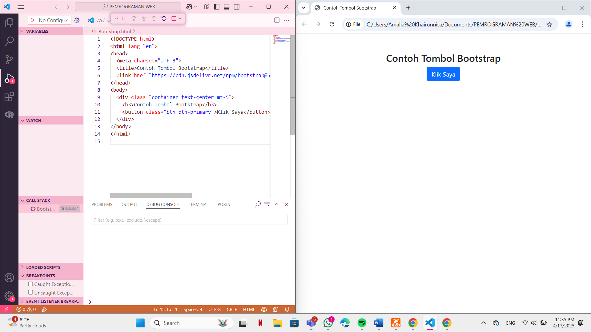

CSS (Cascading Style Sheets) digunakan untuk mengatur tampilan dan gaya visual (misalnya, warna, font, tata letak) dari halaman web. JavaScript digunakan untuk menambahkan interaksi, fungsi dan dinamika ke halaman web. CSS dan JavaScript bekerja sama untuk membuat pengalaman pengguna yang lebih menarik dan interaktif di web.
CSS (Cascading Style Sheets)
Fungsi Utama: Mengatur tampilan dan desain halaman web.
JavaScript
Fungsi Utama: Menambahkan interaktivitas dan logika dinamis pada halaman web.
CSS ( Cascading Style Sheets) dan Javascript dapat diintegrasikan dalam pemrograman web untuk menambahkan gaya dan interaktivitas pada halaman. HTML, CSS dan Javascript bekerja bersama untuk menciptakan pengalaman web yang dinamis dan menarik.
<p style="color: blue; font-size: 18px;">Teks ini berwarna biru</p>
<style> p { color: blue; } </style>
<link rel="stylesheet" href="style.css">
<button onclick="alert('Halo!')">Klik Aku</button>
<script> function halo(){ alert("Halo!"); } </script>
<script src="script.js"></script>
Contoh kode Bootstrap tombol:
<button class="btn btn-primary">Klik Saya</button>
Penjelasan:
btn: class dasar tombol Bootstrap.btn-primary: memberi warna biru Bootstrap.container, text-center, mt-5: digunakan untuk mengatur layout dan posisi konten agar lebih rapi dan berada di tengah.Berikut ini adalah screenshot hasil running contoh tersebut di web:
